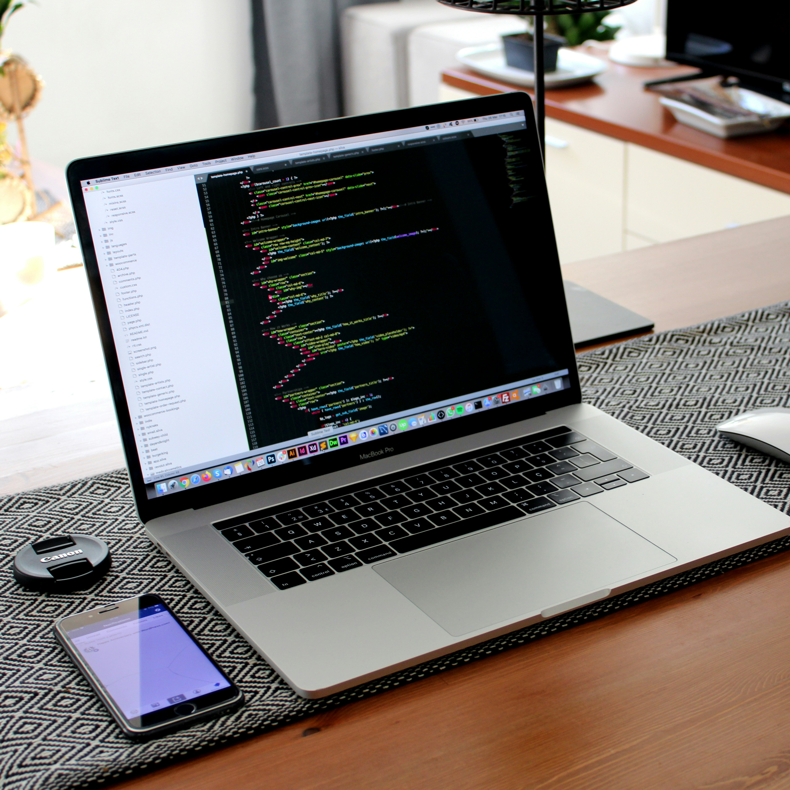

E-Commerce Platform
A shopping interface built around simple product browsing, clear categories, and a smooth checkout flow for a more polished online store experience.
These projects show the kind of interfaces I like building: practical, clean, and focused on usability. They also reflect the range of design and development ideas I’ve been exploring.

A shopping interface built around simple product browsing, clear categories, and a smooth checkout flow for a more polished online store experience.

A writing and publishing platform that supports markdown, tags, and faster content creation through an AI-assisted post generation workflow.

A productivity tool for keeping tasks organized, tracking progress, and making daily work feel a little easier to manage.
| Project | Main Stack | Focus |
|---|---|---|
| E-Commerce Platform | React, Tailwind | UI and checkout |
| Blog App | Node, MongoDB | Content creation |
| Task Manager | Next, TypeScript | Productivity |